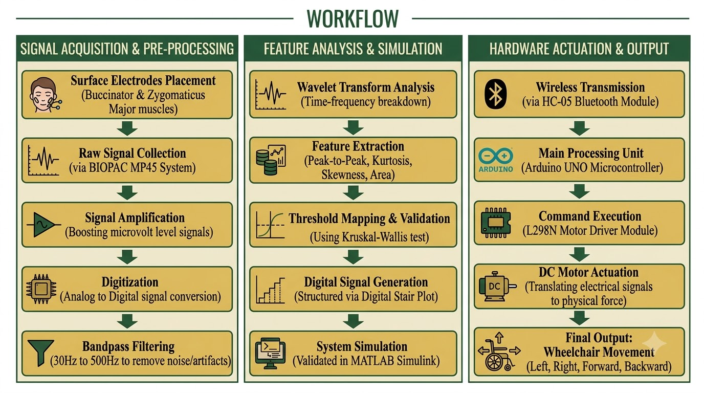
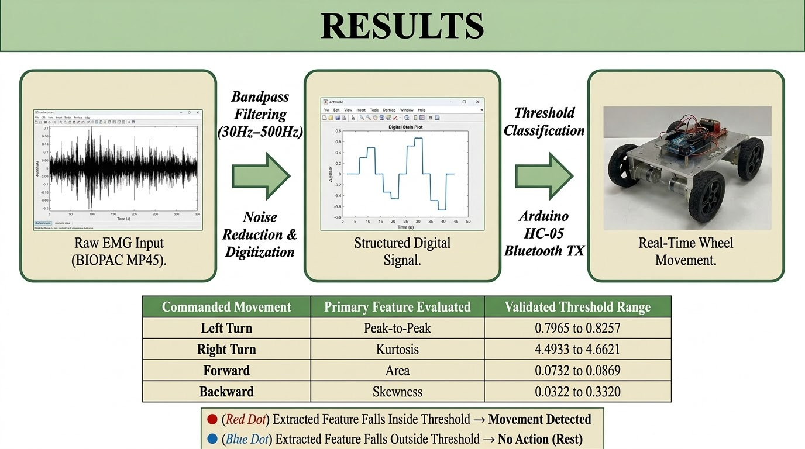

01 · OVERVIEW
Project Overview
This project presents the hardware and software
architecture of a hands-free, cost-effective smart
wheelchair designed for individuals with quadriplegia.
The system captures and translates surface
Electromyography (EMG) signals from specific facial
muscles into real-time directional commands. By
bypassing the need for upper limb functionality,
the system provides an alternative to traditional
joystick-operated assistive devices.

Facial EMG-Controlled Wheelchair — Project Introduction
02 · KEY FEATURES
System Highlights
Non-Invasive Control
Surface electrodes placed on the cheeks
capture intentional facial gestures.
Real-Time Processing
A 30 Hz to 500 Hz bandpass filter is used
to reduce physiological artifacts and
electronic noise.
Wireless Transmission
An HC-05 Bluetooth module transmits digital
command signals to the wheelchair hardware.
Custom Threshold Mapping
Digital stair plots, statistical parameters,
and wavelet transform analysis are used to
classify distinct facial movements.
03 · HARDWARE & SOFTWARE
Technical Environment
BIOPAC MP45
EMG signal acquisition
Arduino UNO
Microcontroller and command processing
HC-05 Bluetooth
Wireless command transmission
L298N Motor Driver
DC motor control
12V 1.3AH SLA Battery
Power supply
MATLAB Simulink
Signal processing and analysis
Arduino IDE
C++ development environment
DC Motors
Wheelchair actuation
04 · MOVEMENT CLASSIFICATION
Facial Gesture → Wheelchair Command
| Muscle Activated |
Target Gesture |
Wheelchair Command |
| Left Buccinator |
Left Cheek Movement |
Left Turn |
| Right Buccinator |
Right Cheek Movement |
Right Turn |
| Zygomaticus Major |
Smiling |
Forward Movement |
| Zygomaticus Major |
Strained Expression |
Backward Movement |
05 · SYSTEM WORKFLOW
From Facial Signal to Wheelchair Motion
Surface electrodes detect microvolt-level electrical
activity from targeted facial muscles. The signals
are then processed, classified, and converted into
directional commands.

System workflow and signal-processing pipeline
1. Signal Acquisition
Surface electrodes detect electrical activity
from targeted facial muscles.
2. Processing & Digitization
Analog signals are amplified, filtered, and
digitized through the BIOPAC MP45 system.
3. Feature Extraction
Peak-to-peak amplitude, kurtosis, skewness,
signal area, and wavelet coefficients are
calculated.
4. Threshold Evaluation
Extracted features are compared against
predefined threshold boundaries statistically
validated using the Kruskal-Wallis test.
5. Actuation
Directional commands are transmitted through
Bluetooth to the Arduino UNO, which controls
the DC motors through the L298N driver.
06 · RESULTS & VALIDATION
Results
Statistical Significance
The Kruskal-Wallis test confirmed that extracted
features such as peak-to-peak amplitude and
signal area significantly differentiate between
distinct facial gestures.
Hardware Execution
The 4WD prototype successfully demonstrated
smooth and accurate mobility in all four
directions without noticeable latency.
Stability Improvements
High-torque motors and dedicated L298N motor
drivers helped resolve early prototype issues
related to jerky movements and load management.

Final prototype and experimental results
07 · PUBLICATIONS & PRESENTATIONS
Academic Contributions
CoaCoNS 2025
Accepted for presentation at the Conference on
Advances in Communication Networks & Systems,
SRM Institute of Science and Technology.
NCRTAS 2024
Presented at the 2nd National Conference on
Recent Trends in Artificial Intelligence and
Soft Computing, Bannari Amman Institute of
Technology.
08 · PROJECT SIGNIFICANCE
Why This Project Matters
The project demonstrates how facial EMG signals can
be used as an alternative human-machine interface
for assistive mobility.
By translating intentional facial muscle activity
into directional wheelchair commands, the system
aims to provide hands-free mobility for individuals
who cannot rely on conventional joystick-based
control.
09 · CITATION
Cite This Project
@bachelorsthesis{srinitha2025facialemg,
author = {Srinitha S and Nivedha E and Ramya Bharathi S},
title = {Facial EMG controlled Wheelchair – a Mobility Assistance for Quadriplegia},
school = {Vels Institute of Science, Technology and Advanced Studies (VISTAS)},
year = {2025},
type = {B.E. Biomedical Engineering Project Phase II Report}
}